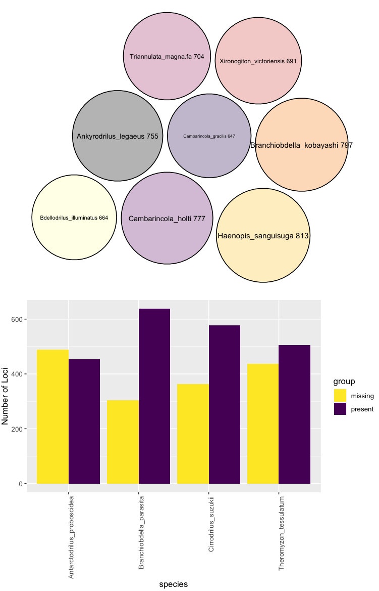
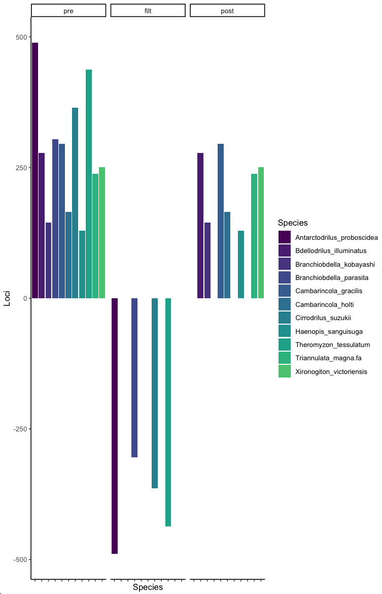
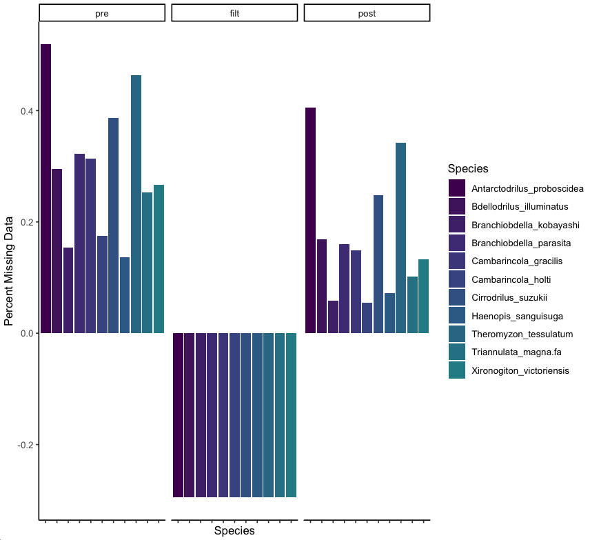
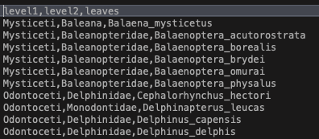
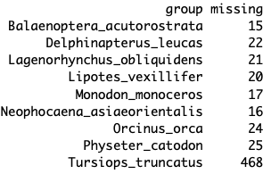
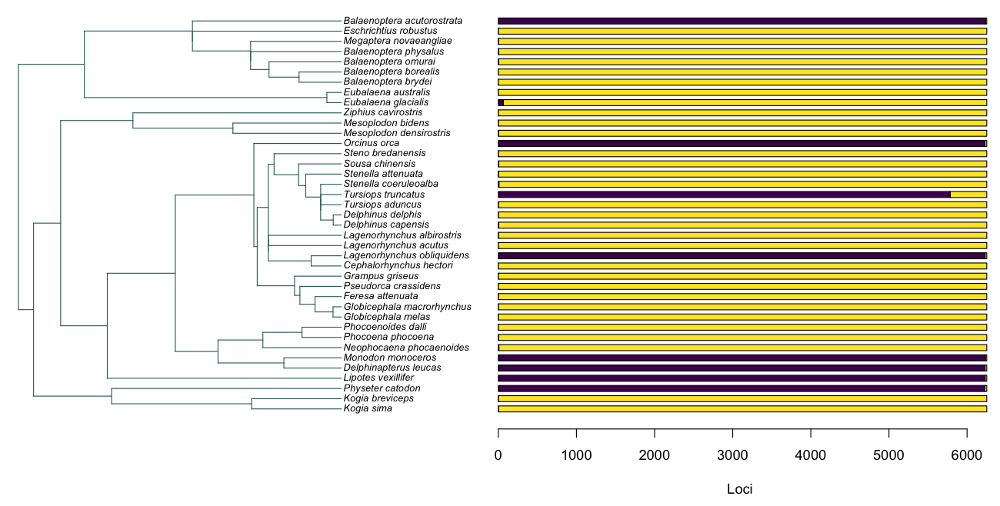

TOAST | Visualizations
What is in this section
In this section we will work on alternate forms of missing data visualization.
This builds on the previous section, so please go back to make sure you have your presence/absence matrix handy.
Note that you can do these visualizations with any presence absence matrix, and that these tutorials are a starting point.
As we develop visuals for manuscripts we will add them here. Likewise, If you made one you would like to see featured please let us know!
Plotting missing data by taxa
We already mentioned that missing data is a common feature of large sequence datasets.A plotted matrix can give you some sense of coverage but it doesn't provide the complete picture. As a first step we are going to create a circlepackplot and a barplot of data presence of absence.
For this you simply need you missing data matrix (see previous section) and a sense of what threshold you find acceptable for missing data per taxon. This varies by dataset and is up to you.
For our example we will say at most 300 loci out of nearly 1000. This is arbitrary and picked for purpose of example.
VisualizeCoverage(missing, threshold=300)

In the above, the top plot shows you the number of loci each taxon that meets your missing data requirements has as a circle pack plot.
In the next panel, those taxa that do not meet your criteria (in this having more than 300 missing loci) are displayed along with their proportion of absent/present loci.
You can also explore the impact of your threshold choice visually.
VisualizeCoverage(missing, threshold=300)

This shows you your original prefiltered data (pre), the taxa you are removing (filt), and the resulting post filtered dataset (post).
This is not the most exciting by taxa, and should be intuitive. We can also assess threshold choices when filtering by loci with poor coverage which will be more interesting.
For this we are going to assess how much of an impact only keeping loci present in 60% of the taxa would have on overall dataset size and the distribution of missing data patterns.
This is the other side of the same coin, as it is common to have loci with low coverage in many datasets. This can be readily visualized as follows.
VisualizeCoverageThreshold(missing2, 0.6)

In the above, on the left we have the total proportion of missing data by taxa. In the middle we can see that removing loci that do not cover at least 60% of the taxa leads to a dataset reduction of close to 30%.
The resulting distribution of missing data is shown on the right, and we can see how this impacts coverage across taxa.
You can readily combine this with the steps on prior pages to first remove low coverage taxa, then assess locus coverage to desired levels.
Interactively Visualizing Taxonomic Missing Data Patterns
If you have a sense of the underlying taxonomic, phylogenetic, or other heirarchical structure of your data, you can interactively explore how missing data is distrubuted at different levels.For this example we will use the example cetacean files that are distributed with TOAST. These include a tsv file of missing data and an accompanying taxonomy file. Note that any hierachical structure would work, we are using taxonomy for convenience.
This file looks like this  You can set up a similar file for any dataset, just be sure your leaves match the taxa you have!
Let's read these files in, remove the locus column, plot, and click around to explore our data!
cetacean<-read.delim("~/Documents/GitHub/toast/sample_data/missing_data.tsv")
taxonomy<-read.csv("~/Documents/GitHub/toast/sample_data/cetacean_taxonomy.csv")
cet2<-cetacean[,-1]
VisualizeTaxonomyInteractive(cet2,taxonomy,threshold=1000)
You can click around the above to zoom in and out and see how your missing data is distributed. The bigger the circle, the more data you are missing.
This makes sense, from the taxa that meet our criteria of having more than 1000 loci, most missing data is in Tursiops.  If you need to look at summary statistics of missing data like in the above, you can also use the missingDataSummary function then subset by some threshold (in this example less than 1000 missing loci).
dataSummary<-missingDataSummary(cet2)
dataSummary[dataSummary[,2]<1000,]
CompleteCoverage(cet2)
In our case we don't have any, so we get a returned message stating "No taxa have complete coverage"
Visualizing Missing Data on a Phylogeny
We can also view this on a phylogeny using a cetacean phylogeny from timetree.org and help from geiger, ape, and phytools in the followingNote that you have the option of viewing "both" missing and present data simultaneously, or just "present" or "missing data" next to a tree.
library(ape)
library(geiger)
library(phytools)
cetTree<-read.tree("~/Downloads/cetacea_species.nwk")
VisTreeData(cet2, cetTree, option="both")

In above example, purple is present and yellow is absent. This cetacean dataset is essentially comprised with few taxa that have near complete coverage of over 6000 loci (purple) and the majority of taxa that have only a handful of loci sequenced (yellow)
That's it! In the next section we will do some more advanced filtering, or feel free to skip ahead to other utilities or go back below.
Next Section: Gene tree based filtration
Back to: Previous Page
Skip to: Utilities | Interactive Plots
Back to: Installation
Back to: TOAST main page